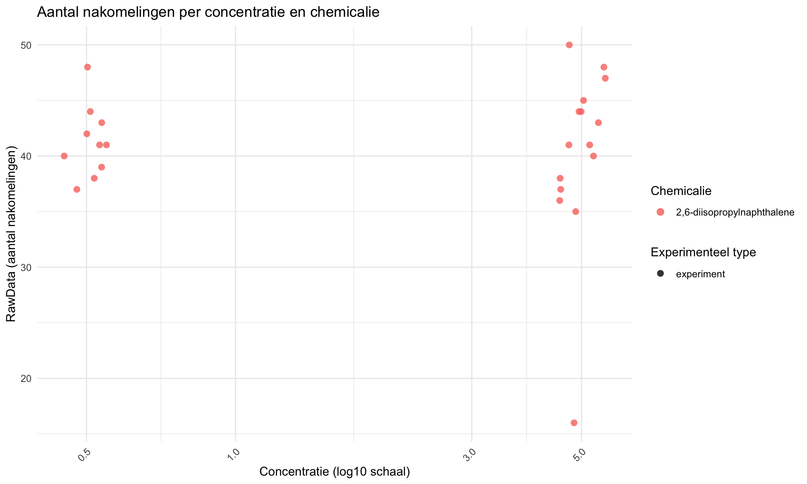
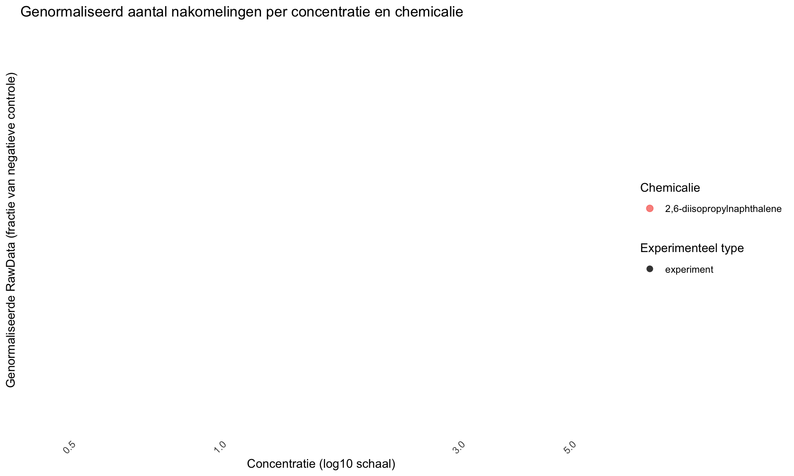

Opdracht 4: reproduceerbare data
In deze analyse wordt data onderzocht afkomstig van het HU lectoraat Innovative Testing in Life Sciences & Chemistry. In het experiment zijn C. elegans blootgesteld aan verschillende concentraties van verschillende chemicaliën. Vervolgens is het aantal nakomelingen bepaald. Het doel van deze analyse is om de data reproduceerbaar te verwerken en te visualiseren in R.
##controle Eerste controleren of data goed is ingelezen
## plateRow plateColumn vialNr dropCode expType expReplicate expName expDate
## 1 NA NA 1 a experiment 3 CE.LIQ.FLOW.062 2020-11-30
## 2 NA NA 1 b experiment 3 CE.LIQ.FLOW.062 2020-11-30
## 3 NA NA 1 c experiment 3 CE.LIQ.FLOW.062 2020-11-30
## 4 NA NA 1 d experiment 3 CE.LIQ.FLOW.062 2020-11-30
## 5 NA NA 1 e experiment 3 CE.LIQ.FLOW.062 2020-11-30
## 6 NA NA 2 a experiment 3 CE.LIQ.FLOW.062 2020-11-30
## expResearcher expTime expUnit expVolumeCounted RawData compCASRN
## 1 Sergio Reijnders - Ellis Herder 68 hour 50 44 24157-81-1
## 2 Sergio Reijnders - Ellis Herder 68 hour 50 37 24157-81-1
## 3 Sergio Reijnders - Ellis Herder 68 hour 50 45 24157-81-1
## 4 Sergio Reijnders - Ellis Herder 68 hour 50 47 24157-81-1
## 5 Sergio Reijnders - Ellis Herder 68 hour 50 41 24157-81-1
## 6 Sergio Reijnders - Ellis Herder 68 hour 50 35 24157-81-1
## compName compConcentration compUnit compDelivery compVehicle elegansStrain
## 1 2,6-diisopropylnaphthalene 4.99 nM Liquid controlVehicleA N2
## 2 2,6-diisopropylnaphthalene 4.99 nM Liquid controlVehicleA N2
## 3 2,6-diisopropylnaphthalene 4.99 nM Liquid controlVehicleA N2
## 4 2,6-diisopropylnaphthalene 4.99 nM Liquid controlVehicleA N2
## 5 2,6-diisopropylnaphthalene 4.99 nM Liquid controlVehicleA N2
## 6 2,6-diisopropylnaphthalene 4.99 nM Liquid controlVehicleA N2
## elegansInput bacterialStrain bacterialTreatment bacterialOD600 bacterialConcX bacterialVolume
## 1 25 OP50 heated 0.743 8 300
## 2 25 OP50 heated 0.743 8 300
## 3 25 OP50 heated 0.743 8 300
## 4 25 OP50 heated 0.743 8 300
## 5 25 OP50 heated 0.743 8 300
## 6 25 OP50 heated 0.743 8 300
## bacterialVolUnit incubationVial incubationVolume incubationUnit incubationMethod incubationRPM
## 1 ul 1,5 glass vial 1000 ul rockroll 35
## 2 ul 1,5 glass vial 1000 ul rockroll 35
## 3 ul 1,5 glass vial 1000 ul rockroll 35
## 4 ul 1,5 glass vial 1000 ul rockroll 35
## 5 ul 1,5 glass vial 1000 ul rockroll 35
## 6 ul 1,5 glass vial 1000 ul rockroll 35
## bubble incubateTemperature
## 1 NA 20
## 2 NA 20
## 3 NA 20
## 4 NA 20
## 5 NA 20
## 6 NA 20## 'data.frame': 25 obs. of 34 variables:
## $ plateRow : logi NA NA NA NA NA NA ...
## $ plateColumn : logi NA NA NA NA NA NA ...
## $ vialNr : int 1 1 1 1 1 2 2 2 2 2 ...
## $ dropCode : chr "a" "b" "c" "d" ...
## $ expType : chr "experiment" "experiment" "experiment" "experiment" ...
## $ expReplicate : int 3 3 3 3 3 3 3 3 3 3 ...
## $ expName : chr "CE.LIQ.FLOW.062" "CE.LIQ.FLOW.062" "CE.LIQ.FLOW.062" "CE.LIQ.FLOW.062" ...
## $ expDate : chr "2020-11-30" "2020-11-30" "2020-11-30" "2020-11-30" ...
## $ expResearcher : chr "Sergio Reijnders - Ellis Herder" "Sergio Reijnders - Ellis Herder" "Sergio Reijnders - Ellis Herder" "Sergio Reijnders - Ellis Herder" ...
## $ expTime : int 68 68 68 68 68 68 68 68 68 68 ...
## $ expUnit : chr "hour" "hour" "hour" "hour" ...
## $ expVolumeCounted : int 50 50 50 50 50 50 50 50 50 50 ...
## $ RawData : int 44 37 45 47 41 35 41 36 40 38 ...
## $ compCASRN : chr "24157-81-1" "24157-81-1" "24157-81-1" "24157-81-1" ...
## $ compName : chr "2,6-diisopropylnaphthalene" "2,6-diisopropylnaphthalene" "2,6-diisopropylnaphthalene" "2,6-diisopropylnaphthalene" ...
## $ compConcentration : num 4.99 4.99 4.99 4.99 4.99 4.99 4.99 4.99 4.99 4.99 ...
## $ compUnit : chr "nM" "nM" "nM" "nM" ...
## $ compDelivery : chr "Liquid" "Liquid" "Liquid" "Liquid" ...
## $ compVehicle : chr "controlVehicleA" "controlVehicleA" "controlVehicleA" "controlVehicleA" ...
## $ elegansStrain : chr "N2" "N2" "N2" "N2" ...
## $ elegansInput : int 25 25 25 25 25 25 25 25 25 25 ...
## $ bacterialStrain : chr "OP50" "OP50" "OP50" "OP50" ...
## $ bacterialTreatment : chr "heated" "heated" "heated" "heated" ...
## $ bacterialOD600 : num 0.743 0.743 0.743 0.743 0.743 0.743 0.743 0.743 0.743 0.743 ...
## $ bacterialConcX : int 8 8 8 8 8 8 8 8 8 8 ...
## $ bacterialVolume : int 300 300 300 300 300 300 300 300 300 300 ...
## $ bacterialVolUnit : chr "ul" "ul" "ul" "ul" ...
## $ incubationVial : chr "1,5 glass vial" "1,5 glass vial" "1,5 glass vial" "1,5 glass vial" ...
## $ incubationVolume : int 1000 1000 1000 1000 1000 1000 1000 1000 1000 1000 ...
## $ incubationUnit : chr "ul" "ul" "ul" "ul" ...
## $ incubationMethod : chr "rockroll" "rockroll" "rockroll" "rockroll" ...
## $ incubationRPM : int 35 35 35 35 35 35 35 35 35 35 ...
## $ bubble : logi NA NA NA NA NA NA ...
## $ incubateTemperature: int 20 20 20 20 20 20 20 20 20 20 ...## plateRow plateColumn vialNr dropCode expType expReplicate
## Mode:logical Mode:logical Min. :1.0 Length:25 Length:25 Min. :3
## NA's:25 NA's:25 1st Qu.:1.0 Class :character Class :character 1st Qu.:3
## Median :2.0 Mode :character Mode :character Median :3
## Mean :1.8 Mean :3
## 3rd Qu.:2.0 3rd Qu.:3
## Max. :3.0 Max. :3
## expName expDate expResearcher expTime expUnit
## Length:25 Length:25 Length:25 Min. :68 Length:25
## Class :character Class :character Class :character 1st Qu.:68 Class :character
## Mode :character Mode :character Mode :character Median :68 Mode :character
## Mean :68
## 3rd Qu.:68
## Max. :68
## expVolumeCounted RawData compCASRN compName compConcentration
## Min. :50 Min. :16.00 Length:25 Length:25 Min. :0.499
## 1st Qu.:50 1st Qu.:38.00 Class :character Class :character 1st Qu.:0.499
## Median :50 Median :41.00 Mode :character Mode :character Median :4.990
## Mean :50 Mean :40.72 Mean :3.194
## 3rd Qu.:50 3rd Qu.:44.00 3rd Qu.:4.990
## Max. :50 Max. :50.00 Max. :4.990
## compUnit compDelivery compVehicle elegansStrain elegansInput
## Length:25 Length:25 Length:25 Length:25 Min. :25
## Class :character Class :character Class :character Class :character 1st Qu.:25
## Mode :character Mode :character Mode :character Mode :character Median :25
## Mean :25
## 3rd Qu.:25
## Max. :25
## bacterialStrain bacterialTreatment bacterialOD600 bacterialConcX bacterialVolume
## Length:25 Length:25 Min. :0.743 Min. :8 Min. :300
## Class :character Class :character 1st Qu.:0.743 1st Qu.:8 1st Qu.:300
## Mode :character Mode :character Median :0.743 Median :8 Median :300
## Mean :0.743 Mean :8 Mean :300
## 3rd Qu.:0.743 3rd Qu.:8 3rd Qu.:300
## Max. :0.743 Max. :8 Max. :300
## bacterialVolUnit incubationVial incubationVolume incubationUnit incubationMethod
## Length:25 Length:25 Min. :1000 Length:25 Length:25
## Class :character Class :character 1st Qu.:1000 Class :character Class :character
## Mode :character Mode :character Median :1000 Mode :character Mode :character
## Mean :1000
## 3rd Qu.:1000
## Max. :1000
## incubationRPM bubble incubateTemperature
## Min. :35 Mode:logical Min. :20
## 1st Qu.:35 NA's:25 1st Qu.:20
## Median :35 Median :20
## Mean :35 Mean :20
## 3rd Qu.:35 3rd Qu.:20
## Max. :35 Max. :20## Rows: 25
## Columns: 4
## $ RawData [3m[38;5;246m<int>[39m[23m 44[38;5;246m, [39m37[38;5;246m, [39m45[38;5;246m, [39m47[38;5;246m, [39m41[38;5;246m, [39m35[38;5;246m, [39m41[38;5;246m, [39m36[38;5;246m, [39m40[38;5;246m, [39m38[38;5;246m, [39m44[38;5;246m, [39m48[38;5;246m, [39m43[38;5;246m, [39m50[38;5;246m, [39m16[38;5;246m, [39m48[38;5;246m, [39m42[38;5;246m, [39m41[38;5;246m,[39m…
## $ compName [3m[38;5;246m<chr>[39m[23m "2,6-diisopropylnaphthalene"[38;5;246m, [39m"2,6-diisopropylnaphthalene"[38;5;246m, [39m"2,6-diisop…
## $ compConcentration [3m[38;5;246m<dbl>[39m[23m 4.990[38;5;246m, [39m4.990[38;5;246m, [39m4.990[38;5;246m, [39m4.990[38;5;246m, [39m4.990[38;5;246m, [39m4.990[38;5;246m, [39m4.990[38;5;246m, [39m4.990[38;5;246m, [39m4.990[38;5;246m, [39m4.990[38;5;246m, [39m4…
## $ expType [3m[38;5;246m<chr>[39m[23m "experiment"[38;5;246m, [39m"experiment"[38;5;246m, [39m"experiment"[38;5;246m, [39m"experiment"[38;5;246m, [39m"experiment"[38;5;246m, [39m"…## 'data.frame': 25 obs. of 34 variables:
## $ plateRow : logi NA NA NA NA NA NA ...
## $ plateColumn : logi NA NA NA NA NA NA ...
## $ vialNr : int 1 1 1 1 1 2 2 2 2 2 ...
## $ dropCode : chr "a" "b" "c" "d" ...
## $ expType : Factor w/ 1 level "experiment": 1 1 1 1 1 1 1 1 1 1 ...
## $ expReplicate : int 3 3 3 3 3 3 3 3 3 3 ...
## $ expName : chr "CE.LIQ.FLOW.062" "CE.LIQ.FLOW.062" "CE.LIQ.FLOW.062" "CE.LIQ.FLOW.062" ...
## $ expDate : chr "2020-11-30" "2020-11-30" "2020-11-30" "2020-11-30" ...
## $ expResearcher : chr "Sergio Reijnders - Ellis Herder" "Sergio Reijnders - Ellis Herder" "Sergio Reijnders - Ellis Herder" "Sergio Reijnders - Ellis Herder" ...
## $ expTime : int 68 68 68 68 68 68 68 68 68 68 ...
## $ expUnit : chr "hour" "hour" "hour" "hour" ...
## $ expVolumeCounted : int 50 50 50 50 50 50 50 50 50 50 ...
## $ RawData : num 44 37 45 47 41 35 41 36 40 38 ...
## $ compCASRN : chr "24157-81-1" "24157-81-1" "24157-81-1" "24157-81-1" ...
## $ compName : Factor w/ 1 level "2,6-diisopropylnaphthalene": 1 1 1 1 1 1 1 1 1 1 ...
## $ compConcentration : num 4.99 4.99 4.99 4.99 4.99 4.99 4.99 4.99 4.99 4.99 ...
## $ compUnit : chr "nM" "nM" "nM" "nM" ...
## $ compDelivery : chr "Liquid" "Liquid" "Liquid" "Liquid" ...
## $ compVehicle : chr "controlVehicleA" "controlVehicleA" "controlVehicleA" "controlVehicleA" ...
## $ elegansStrain : chr "N2" "N2" "N2" "N2" ...
## $ elegansInput : int 25 25 25 25 25 25 25 25 25 25 ...
## $ bacterialStrain : chr "OP50" "OP50" "OP50" "OP50" ...
## $ bacterialTreatment : chr "heated" "heated" "heated" "heated" ...
## $ bacterialOD600 : num 0.743 0.743 0.743 0.743 0.743 0.743 0.743 0.743 0.743 0.743 ...
## $ bacterialConcX : int 8 8 8 8 8 8 8 8 8 8 ...
## $ bacterialVolume : int 300 300 300 300 300 300 300 300 300 300 ...
## $ bacterialVolUnit : chr "ul" "ul" "ul" "ul" ...
## $ incubationVial : chr "1,5 glass vial" "1,5 glass vial" "1,5 glass vial" "1,5 glass vial" ...
## $ incubationVolume : int 1000 1000 1000 1000 1000 1000 1000 1000 1000 1000 ...
## $ incubationUnit : chr "ul" "ul" "ul" "ul" ...
## $ incubationMethod : chr "rockroll" "rockroll" "rockroll" "rockroll" ...
## $ incubationRPM : int 35 35 35 35 35 35 35 35 35 35 ...
## $ bubble : logi NA NA NA NA NA NA ...
## $ incubateTemperature: int 20 20 20 20 20 20 20 20 20 20 ...
Er is een log10-transformatie gebruikt op de x-as om verschillen in concentratie beter zichtbaar te maken. Daarnaast is jitter toegevoegd om te voorkomen dat punten exact over elkaar heen vallen.
Normalisatie op de negatieve controle
Eerst bereken ik het gemiddelde van de negatieve controle.
## [1] NaN## mean_normalized_negative
## 1 NaN##Scatterplot met genormaliseerde waarde

Negatieve controle
De negatieve controle is de conditie waarin geen toxisch effect wordt verwacht. In deze dataset is dat de controlNegative. Deze controle geeft het normale aantal nakomelingen weer onder standaardomstandigheden.
Positieve controle
De positieve controle is een conditie waarvan verwacht wordt dat deze duidelijk een effect veroorzaakt. Daarmee kan worden gecontroleerd of het experiment gevoelig genoeg is om een biologisch effect te detecteren.
Vehicle controle
De vehicle controle bevat alleen het oplosmiddel waarin een stof is opgelost, zonder de werkzame stof zelf. Hiermee kan worden nagegaan of het oplosmiddel zelf invloed heeft op het aantal nakomelingen.
Nut van de verschillende controles
De negatieve controle laat zien wat de normale baseline is zonder behandeling.
De positieve controle laat zien of het experiment in staat is om een effect te detecteren.
De vehicle controle laat zien of het oplosmiddel zelf een effect veroorzaakt. Dit is belangrijk, omdat anders een effect onterecht aan het chemicalie zou kunnen worden toegeschreven.
Nut van de normalisatie
De data zijn genormaliseerd ten opzichte van de negatieve controle, zodat de gemiddelde waarde van de negatieve controle gelijk wordt aan 1.
Het voordeel hiervan is dat alle meetwaarden direct vergeleken kunnen worden met de baseline. Hierdoor wordt het eenvoudiger om te zien of een behandeling leidt tot minder of juist meer nakomelingen dan verwacht onder normale omstandigheden.
Een waarde kleiner dan 1 betekent minder nakomelingen dan in de negatieve controle. Een waarde groter dan 1 betekent meer nakomelingen dan in de negatieve controle.
Stappenplan voor vervolgonderzoek
Een logische vervolgstap voor dit type data is een dose-response analyse met een log-logistisch model om de IC50 te bepalen. Hiervoor kan in R het package drc gebruikt worden.
Stap 7: herhalen voor andere chemicaliën
Dezelfde stappen kunnen worden herhaald voor andere chemicaliën, zodat de IC50-waarden onderling vergeleken kunnen worden.
Conclusie
In deze analyse is de dataset ingelezen, gecontroleerd op correcte datatypes en gevisualiseerd met scatterplots. Daarna zijn de meetwaarden genormaliseerd ten opzichte van de negatieve controle, zodat de resultaten beter vergelijkbaar zijn.
Een logische vervolgstap is het uitvoeren van een dose-response analyse met een log-logistisch model, waarmee per chemicalie een IC50 kan worden geschat.